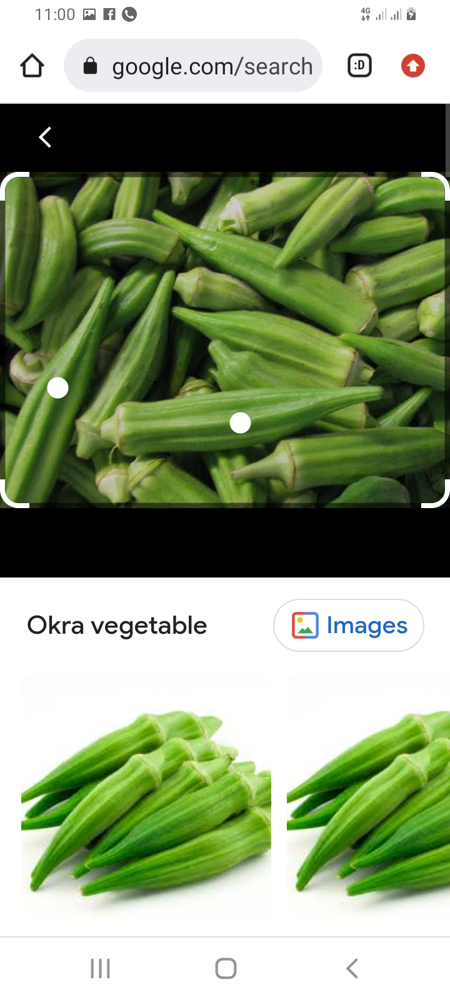
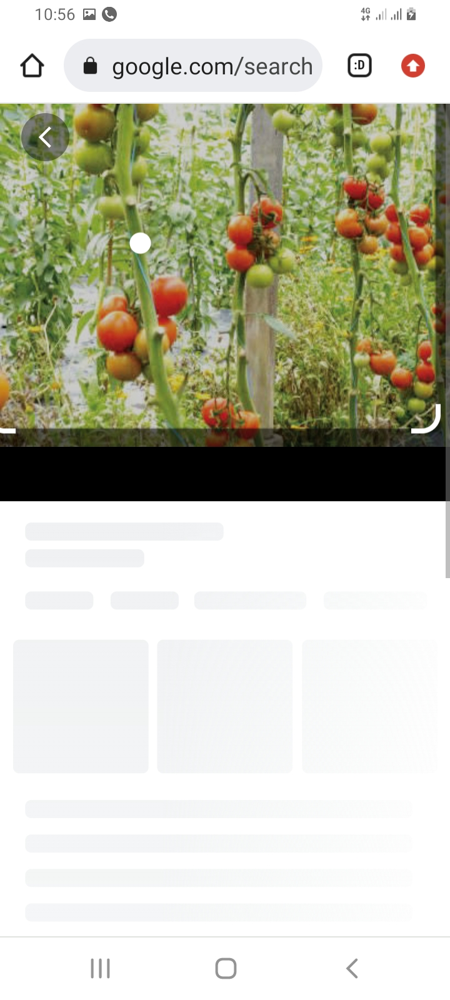
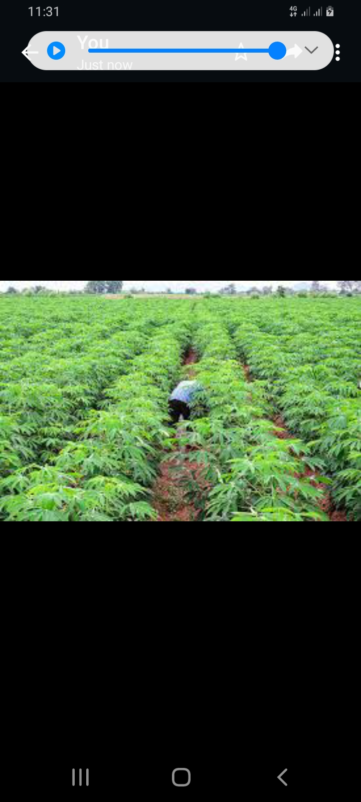
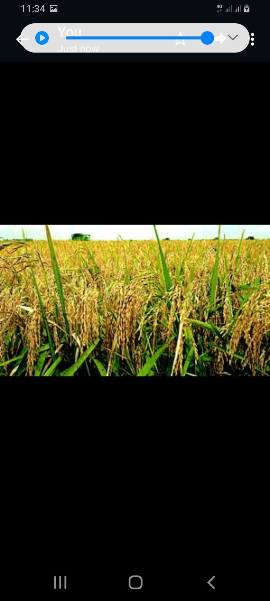
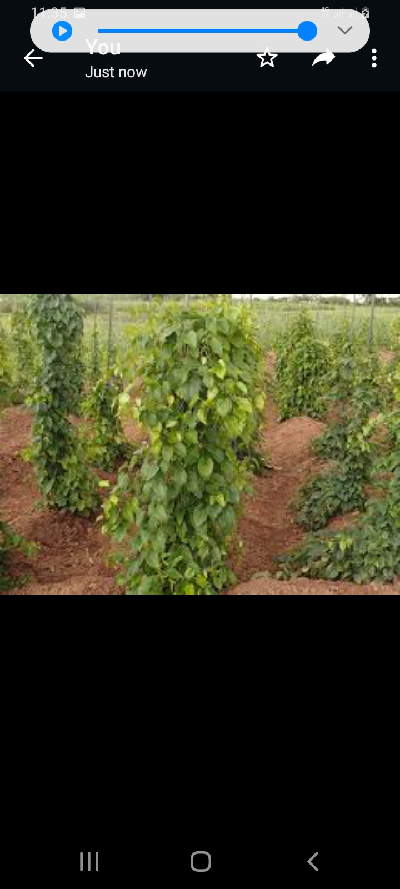

The ginger
real ginger for your inport and export .
corn
fresh corn.

okro
okro for your soup.

tomatos
fresh tomato .

garden egg
very good for you.

casava
casava section.

rice
rice section.

yam
yam section.
About Me, The farm owner
I am Who I Am!
With Passion For Real, agricultural produce
Just me, myself and I, exploring the universe of unknownment. I have interest and passion for farming and i dived into it with passion believing its going to turn out good for me and here i am exploring the world. .